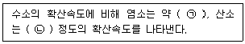
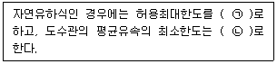
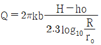
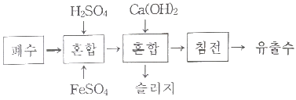
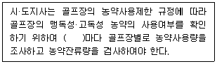

수질환경기사 (2020-08-22 기출문제)
1과목: 수질오염개론
1. 에탄올(C2H5OH) 300mg/L가 함유된 폐수의 이론적 COD값(mg/L)은? (단, 기타 오염물질은 고려하지 않음)
- 312
- 453
- 578
- 626
(정답률: 72%)

2. 물질대사 중 동화작용을 가장 알맞게 나타낸 것은?
- 잔여영양분 + ATP
→ 세포물질 + ADP + 무기인 + 배설물 - 잔여영양분 + ADP + 무기인
→ 세포물질 + ATP + 배설물 - 세포내 영양분의 일부 + ATP
→ ADP + 무기인 + 배설물 - 세포내 영양분의 일부 + ADP + 무기인
→ ATP + 배설물
(정답률: 75%)
3. 세균의 구조에 대한 설명이 올바르지 못한 것은?
- 세포벽 : 세포의 기계적인 보호
- 협막과 점액층 : 건조 혹은 독성물질로부터 보호
- 세포막 : 호흡대사 기능을 발휘
- 세포질 : 유전에 관계되는 핵산 포함
(정답률: 66%)
4. 자연계의 질소순환에 대한 설명으로 가장 거리가 먼 것은?
- 대기의 질소는 방전작용, 질소고정세균 그리고 조류에 의하여 끊임없이 소비된다.
- 소변 속의 질소는 주로 요소로 바로 탄산암모늄으로 가수 분해된다.
- 유기질소는 부패균이나 곰팡이의 작용으로 암모니아성 질소로 변환된다.
- 암모니아성 질소는 혐기성 상태에서 환원균에 의해 바로 질소가스로 변환딘다.
(정답률: 72%)
5. 수자원의 순환에서 가장 큰 비중을 차지하는 것은?
- 해양으로의 강우
- 증발
- 증산
- 육지로의 강우
(정답률: 81%)
6. Graham의 기계법칙에 관한 내용으로 ( ) 에 알맞은 것은?

- ㉠ 1/6, ㉡ 1/4
- ㉠ 1/6, ㉡ 1/9
- ㉠ 1/4, ㉡ 1/6
- ㉠ 1/9, ㉡ 1/6
(정답률: 72%)
7. 화학흡착에 관한 내용으로 옳지 않은 것은?
- 흡착된 물질은 표면에 농축되어 여러 개의 겹쳐진 층을 형성함
- 흡착 분자는 표면에 한 부위에서 다른 부위로의 이동이 자유롭지 못함
- 흡착된 물질 제거를 위해 일반적으로 흡착제를 높은 온도로 가열함
- 거의 비가역적임
(정답률: 62%)
8. 유량 400,000 m3/day의 하천에 인구 20만명의 도시로부터 30,000 m3/day의 하수가 유입되고 있다. 하수 유입 전 하천의 BOD는 0.5 mg/L 이고, 유입 후 하천의 BOD를 2mg/L로 하기 위해서 하수처리장을 건설하려고 한다면 이 처리장의 BOD 제거효율(%)은? (단, 인구 1인당 BOD 배출량 = 20 g/day)
- 약 84
- 약 87
- 약 90
- 약 93
(정답률: 44%)
9. 150 kL/day 의 분뇨를 포기하여 BOD의 20%를 제거하였다. BOD 1kg을 제거하는 데 필요한 공기공급량이 60m3 이라 했을 때 시간당 공기공급량(m3)은? (단, 연속포기, 분뇨의 BOD = 20,000 mg/L)
- 100
- 500
- 1000
- 1500
(정답률: 58%)
10. 유량 4.2m3/sec, 유속 0.4m/sec, BOD 7mg/L 인 하천이 흐르고 있다. 이 하천에 유량 25.2 m3/min, BOD 500mg/L인 공장폐수가 유입되고 있다면 하천수와 공장폐수의 합류지점의 BOD(mg/L)는? (단, 완전 혼합이라 가정)
- 약 33
- 약 45
- 약 52
- 약 67
(정답률: 65%)
11. Glucose(C6H12O6) 500mg/L 용액을 호기성 처리 시 필요한 이론적인 인(P)농도(mg/L)는? (단, BOD5 : N : P = 100 : 5 : 1, K1 = 0.1 day-1, 상용대수기준, 완전분해기준, BODu = COD)
- 약 3.7
- 약 5.6
- 약 8.5
- 약 12.8
(정답률: 59%)
12. 20℃에서 k1이 0.16/day(base 10)이라 하면, 10℃에 대한 BOD5/BODu 비는? (단, θ = 1.047)
- 0.63
- 0.68
- 0.73
- 0.78
(정답률: 60%)
13. 크롬에 관한 설명으로 틀린 것은?
- 만성크롬중독인 경우에는 미나마타병이 발생한다.
- 3가 크롬은 비교적 안정하나 6가 크롬 화합물은 자극성이 강하고 부식성이 강하다.
- 3가 크롬은 피부흡수가 어려우나 6가 크롬은 쉽게 피부를 통과한다.
- 만성중독현상으로는 비점막염증이 나타난다.
(정답률: 81%)
14. 우리나라의 수자원에 관한 설명으로 가장 거리가 먼 것은?
- 강수량의 지역적 차이가 크다.
- 주요 하천 중 한강의 수자운 보유량이 가장 많다.
- 하천의 유역면적은 크지만 하천경사는 급하다.
- 하천의 하상계수가 크다.
(정답률: 69%)
15. 적조현상에 의해 어패류가 폐사하는 원인과 가장 거리가 먼 것은?
- 적조생물이 어패류의 아가미에 부착하여
- 적조류의 광범위한 수면막 형성으로 인해
- 치사성이 높은 유독물질을 분비하는 조류로 인해
- 적조류의 사후분해에 의한 수중 부패 독의 발생으로 인해
(정답률: 72%)
16. Formaldehyde(CH2O)의 COD/TOC 비는?
- 1.37
- 1.67
- 2.37
- 2.67
(정답률: 72%)
17. 유해물질과 그 중독증상(영향)과의 관계로 가장 거리가 먼 것은?
- Mn : 흑피증
- 유기인 : 현기증, 동공축소
- Cr6+ : 피부궤양
- PCB : 카네미유증
(정답률: 72%)
18. 경도에 과한 관계식으로 틀린 것은?(문제 오류로 가답안 발표시 3번으로 발표되었지만 확정답안 발표시 2, 3번이 정답처리 되었습니다. 여기서는 가답안인 3번을 누르시면 정답 처리 됩니다.)
- 총경도 – 비탄산경도 = 탄산경도
- 총경도 – 탄산경도 = 마크네슘경도
- 알칼리도 ＜ 총경도 일 때 탄산경도 = 비탄산경도
- 알칼리도 ≥ 총경도 일 때 탄산경도 = 총경도
(정답률: 77%)
19. 하구의 혼합 형식 중 하상구배와 조차가 적어서 염수와 담수의 2층 밀도류가 발생되는 것은?
- 강 혼합형
- 약 혼합형
- 중 혼합형
- 완 혼합형
(정답률: 78%)
20. 자정상수(f)의 영향 인자에 관한 설명으로 옳은 것은?
- 수심이 깊을수록 자정상수는 커진다.
- 수온이 높을수록 자정상수는 작아진다.
- 유속이 완만할수록 자정상수는 커진다.
- 바닥구배가 클수록 자정상수는 작아진다.
(정답률: 72%)
2과목: 상하수도계획
21. 상수도시설인 취수탑의 취수구에 관한 내용과 가장 거리가 먼 것은?
- 계획취수위는 취수구로부터 도수기점까지의 수두손실을 계산하여 결정한다.
- 취수탑의 내측이나 외측에 슬루스케이트(제수문), 버터플라이밸브 또는 제수밸브 등을 설치한다.
- 전면에서는 협잡물을 제거하기 위한 스크린을 설치해야 한다.
- 단면형상은 장방형 또는 원형으로 한다.
(정답률: 51%)
22. 계획오수량에 관한 설명으로 옳지 않은 것은?
- 계획1일최대오수량은 1인1일최대오수량에 계힉인구를 곱한 후, 여기에 공장 폐수량, 지하수량 및 기타 배수량을 더한 것으로 한다.
- 합류식에서 우천 시 계획오슈량은 원칙적으로 계획시간최대오수량의 3배 이상으로 한다.
- 지하수량은 1인1일평균오수량의 5~10%로 한다.
- 계획시간최대오수량은 계획1일 최대오수량의 1시간당 수량의 1.3~1.8배를 표준으로 한다.
(정답률: 74%)
23. 도수관을 설계할 때 평균유속 기준으로 ( )에 옳은 것은?

- ㉠ 1.5m/s, ㉡ 0.3m/s
- ㉠ 1.5m/s, ㉡ 0.6m/s
- ㉠ 3.0m/s, ㉡ 0.3m/s
- ㉠ 3.0m/s, ㉡ 0.6m/s
(정답률: 74%)
24. 상수의 도수관로의 자연부식 중 매크로셀 부식에 해당되지 않은 것은?
- 이종금속
- 간섭
- 산소농담(통기차)
- 콘크리트·토양
(정답률: 69%)
25. 호소의 중소량 취수시설로 많이 사용되고 구조가 간단하며 시공도 비교적 용이하나 수중에 설치되므로 호소의 표면수는 취수할 수 없는 것은?
- 취수틀
- 취수보
- 취수관거
- 취수문
(정답률: 65%)
26. 상수도관으로 사용되는 괁오 중 스테인리스강관에 관한 특징으로 틀린 것은?
- 강인성이 뛰어나고 충격에 강하다.
- 용접접속에 시간이 걸린다.
- 라이닝이나 도장을 필요로 하지 않는다.
- 이종금속과의 절연처리가 필요 없다.
(정답률: 68%)
27. 우수배제계획 수립에 적용되는 하수관거의 계획우수량 결정을 위한 확률년수는?
- 5~10년
- 10~15년
- 10~30년
- 30~50년
(정답률: 64%)
28. 상수도시설 일반구조의 설계하중 및 외력에 대한 고려사항으로 틀린 것은?
- 풍압은 풍량에 풍력계수를 곱하여 산정한다.
- 얼음 두께에 비하여 결빙 면이 작은 구조물의 설계에는 빙압을 고려한다.
- 지하수위가 높은 곳에 설치하는 지상 구조물은 비웠을 경우의 부력을 고려한다.
- 양입력은 구조물의 전후에 수위차가 생기는 경우에 고려한다.
(정답률: 66%)
29. 하수관거 배수설비의 설명 중 옳지 않은 것은?
- 배수설비는 공공하수도의 일종이다.
- 배수설비 중의 물받이의 설치는 배수구역 경계지점 또는 배수구역 안에 설치하는 것을 기본으로 한다.
- 결빙으로 인한 우·오수 흐름의 지장이 발생하지 않도록 하여야 한다.
- 배수관은 암거로 하며, 우수만을 배수하는 경우에는 개거도 가능하다.
(정답률: 56%)
30. 하수 펌프장 시설인 스크류펌프(screw pump)의 일반적인 장·단점으로 틀린 것은?
- 회전수가 낮기 때문에 마모가 적다.
- 수중의 협잡물이 물과 함께 떠올라 폐쇄 가능성이 크다.
- 기동에 필요한 물채움장치나 밸브 등 부대시설이 없어 자동운전이 쉽다.
- 토출측의 수로를 압력관으로 할 수 없다.
(정답률: 54%)
31. 원수의 냄새물질(2-MIB, geosmin 등), 색도, 미량유기물질, 소독부산물전구물질, 암모니아성질소, 음이온계면활성제, 휘발성, 유기물질 등을 제거하기 위한 수처리공정으로 가장 적합한 것은?
- 완속여과
- 급속여과
- 막여과
- 활성탄여과
(정답률: 68%)
32. 지표수의 취수를 위해 하천수를 수원으로 하는 경우의 취수탑에 관한 설명으로 옳지 않은 것은?
- 대량 취수 시 경제적인 것이 특징이다.
- 취수보와 달리 토사유입을 방지할 수 있다.
- 공사비는 일반적으로 크다.
- 시공 시 가물막이 등 가설공사는 비교적 소규모로 할 수 있다.
(정답률: 57%)
33. 계획취수량을 확보하기 위하여 필요한 저수용량의 결정에 사용하는 계획기준년의 표준으로 가장 적절한 것은?
- 3개년에 제1위 정도의 갈수
- 5개년에 제1위 정도의 갈수
- 7개년에 제1위 정도의 갈수
- 10개년에 제1위 정도의 갈수
(정답률: 72%)
34. 자유수면을 갖는 천정호(반경 ro = 0.5m, 원지하수위 H = 7.0m)에 대한 양수시험결과 양수량이 0.03m3/sec일 때 정호의 수심 ho = 5.0m, 영향반경 R = 200m에서 평형이 되었다. 이 때 투수계수 k(m/sec)는?
- 4.5×10-4
- 2.4×10-3
- 3.5×10-3
- 1.6×10-2
(정답률: 39%)
35. 계획송수량과 계획도수량의 기준이 되는 수량은?
- 계획송수량 : 계획1일최대급수량
계획도수량 : 계획시간최대급수량 - 계획송수량 : 계획시간최대급수량
계획도수량 : 계획1일최대급수량 - 계획송수량 : 계획취수량
계획도수량 : 계획1일최대급수량 - 계획송수량 : 계획1일최대급수량
계획도수량 : 계획취수량
(정답률: 67%)
36. 펌프의 캐비테이션(공동현상) 발생을 방지하기 위한 대책으로 옳은 것은?
- 펌프의 설치위치를 가능한 한 높게 하여 가용유효흡입수두를 크게 한다.
- 흡입관의 손실을 가능한 한 작게 하여 가용유효흡입수두를 크게 한다.
- 펌프의 회전속도를 높게 선정하여 필요유효흡입수두를 작게 한다.
- 흡입 측 밸브를 완전히 폐쇄하고 펌프를 운전한다.
(정답률: 64%)
37. 직경 1m의 원형콘크리트관에 하수가 흐륵 있다. 동수구배(I)가 0.01이고, 수심이 0.5m일 때 유속(m/sec)은? (단, 조도계수(n) = 0.013, Manning 공식적용, 만관기준)
- 2.1
- 2.7
- 3.1
- 3.7
(정답률: 62%)
38. 수격작용을 방지 또는 줄이는 방법이라 할 수 없는 것은?
- 펌프에 플라이휠을 붙여 펌프의 관성을 증가시킨다.
- 흡입측 관로에 압력조절수조를 설치하여 부압을 유지시킨다.
- 펌프 토출구 부근에 공기탱크를 두거나 부압 발생지점에 흡기밸브를 설치하여 압력강하 시 공기를 넣어준다.
- 관내유속을 낮추거나 관거상황을 변경한다.
(정답률: 48%)
39. 취수시설에서 취수된 원수를 정수시설까지 끌어들이는 시설은?
- 배수시설
- 급수시설
- 송수시설
- 도수시설
(정답률: 75%)
40. 피압수 우물에서 영향원 직경 1km, 우물직경 1m, 피압대 수층의 두께 20m, 투수계수 20m/day로 추정되었다면, 양수정에서의 수위 강하를 5m로 유지하기 위한 양수량(m3/sec)은? (단,

)- 약 0.0⑤
- 약 0.02
- 약 0.⑤
- 약 0.1
(정답률: 49%)
3과목: 수질오염방지기술
41. 하·폐수를 통하여 배출되는 계면활성제에 대한 설명 중 잘못된 것은?
- 계면활성제는 메틸렌블루 활성물질이라고도 한다.
- 계면활성제는 주로 합성세제로부터 배출되는 것이다.
- 물에 약간 녹으며 폐수처리 플랜트에서 거품을 만들게 된다.
- ABS는 생물학적으로 분해가 매우 쉬우나 LAS는 생물학적으로 분해가 어려운 난분해성 물질이다.
(정답률: 73%)
42. 하수처리를 위한 소독방식의 장단점에 관한 내용으로 틀린 것은?
- ClO2 : 부산물에 의한 청색증이 유발될 수 있다.
- ClO2 : pH 변화에 따른 영향이 적다.
- NaOCl : 잔류효과가 작다.
- NaOCl : 유량이나 탁도 변동에서 적응이 쉽다.
(정답률: 62%)
43. 접촉매체를 이용한 생물막공법에 대한 설명으로 틀린 것은?
- 유지관리가 쉽고, 유기물 농도가 낮은 기질제거에 유효하다.
- 수온의 변화나 부하변동에 강하고 처리효율에 나쁜 영향을 주는 슬러지 팽화문제를 해결할 수 있다.
- 공극폐쇄 시에도 양호한 처리수질을 얻을 수 있으며 세정조작이 용이하다.
- 슬러지 발생량이 적고 고도처리에도 효과적이다.
(정답률: 53%)
44. 막분리 공법을 이용한 정수처리의 장점으로 가장 거리가 먼 것은?
- 부산물이 생기지 않는다.
- 정수장 면적을 줄일 수 있다.
- 시설의 표준화를 부품관리 시공이 간편하다.
- 자동화, 무인화가 용이하다.
(정답률: 47%)
45. 다음 공정에서 처리될 수 있는 폐수의 종류는?

- 크롬폐수
- 시안폐수
- 비소폐수
- 방사능폐수
(정답률: 62%)
46. 무기수은계 화합물을 함유한 폐수의 처리방법이 아닌 것은?
- 황화물침전법
- 활성탄흡착법
- 산화분해법
- 이온교환법
(정답률: 50%)
47. 인이 8mg/L 들어 있는 하수의 인 침전(이을 침전시키는 실험에서 인 1몰 당 알루미늄 1.5몰이 필요)을 위해 필요한 액체 명반(Al2(SO4)3·18H2O)의 양(L/day)은? (단, 액체 명반의 순도 = 48%, 단위중량 = 1281 kg/m3, 명반 분자량 = 666.7, 알루미늄 원자량 = 26.98, 인 원자량 = 31, 유량 = 10000 m3/day)
- 약 2100
- 약 2800
- 약 3200
- 약 3700
(정답률: 27%)
48. 바이오 센서와 수질오염공정시험기준에서 독성평가에 사용되기도 하는 생물종으로 가장 가까운 것은?
- Leptodora
- Monia
- Daphnia
- Alona
(정답률: 65%)
49. 하수처리과정에서 염소소독과 자외선소독을 비교할 때 염소소독의 장·단점으로 틀린 것은?
- 암모니아의 첨가에 의해 결합잔류염소가 형성된다.
- 염소접촉조로부터 휘발성유기물이 생성된다.
- 처리수의 총용존고형물이 감소한다.
- 처리수의 잔류독성이 탈염소과정에 의해 제거되어야 한다.
(정답률: 66%)
50. 농도 5500mg/L인 폭기조 활성슬러지 1L를 30분간 정지시킨 후 침강 슬러지의 부피가 45%를 차지하였을 때의 SDI는?
- 1.22
- 1.48
- 1.61
- 1.83
(정답률: 41%)
51. 침전지에서 입자의 침강 속도가 증대되는 원인이 아닌 것은?
- 입자 비중의 증가
- 액체 점성계수의 증가
- 수온의 증가
- 입자 지경의 증가
(정답률: 69%)
52. 음용수 중 철과 망간의 기준 농도에 맞추기 위한 그 제거 공정으로 알맞지 않은 것은?
- 포기에 의한 침전
- 생물학적 여과
- 제올라이트 수착
- 인산염에 의한 산화
(정답률: 49%)
53. 하수처리방식 중 회전원판법에 관한 설명으로 가장 거리가 먼 것은?
- 활성슬러지법에 비해 2차 침전지에서 미세한 SS가 유출되기 쉽고, 처리수의 투명도가 나쁘다.
- 운전관리상 조작이 간단한 편이다.
- 질산화가 거의 발생하지 않으며, pH 저하도 거의 없다.
- 소비 전력량이 소규모 처리시설에서는 표준 활성 슬러지법에 비하여 적은 편이다.
(정답률: 59%)
54. 활성탄 흡착단계를 설명한 것으로 가장 거리가 먼 것은?
- 흡착제 주위의 막을 통하여 피흡착제의 분자가 이동하는 단계
- 피흡착제의 극성에 의해 제타포텐샬(Zeta Potential)이 적용되는 단계
- 흡착제 공극을 통하여 피흡착제가 확산하는 단계
- 흡착이 되면서 흡착제와 피흡착제 사이에 결합이 일어나는 단계
(정답률: 51%)
55. 2000 m3/day 의 하수를 처리하는 하수 처리장의 1차 침전지에서 침전고형물이 0.4 ton/day, 2차 침전지에서 0.3 ton/day이 제거되며 이 때 각 고형물의 함수율은 98%, 99.5% 이다. 체류시간을 3일로 하여 고형물을 농축시키려면 농축조의 크기(m3)는? (단, 고형물의 비중 = 1.0 가정)
- 80
- 240
- 620
- 1860
(정답률: 43%)
56. 포기조 유효용량이 1000m3이고, 잉여슬러지 배출량이 25 m3/day로 운전되는 활성슬러지 공정이 있다. 반송슬러지의 SS 농도(Xr)에 대한 MLSS 농도(X)의 비(X/Xr)가 0.25일 때 평균 미생물 체류시간(day)은? (단, 2차 침전지 유출수의 SS 농도는 무시)
- 7
- 8
- 9
- 10
(정답률: 48%)
57. 활성슬러지 공정을 사용하여 BOD 200mg/L의 하수 2000m3/day를 BOD 30mg/L까지 처리하고자 한다. 포기조의 MLSS를 1600 mg/L로 유지하고, 체류시간을 8시간으로 하고자 할 때의 F/M 비(kg BOD/kg MLSS·day)는?
- 0.12
- 0.24
- 0.38
- 0.43
(정답률: 46%)
58. 9.0kg 글루코스(Glucose)로부터 발생가능한 0℃, 1atm에서 CH4 가스의 용적(L)은? (단, 혐기성 분해 기준)
- 3160
- 3360
- 3560
- 3760
(정답률: 55%)
59. Monod 식을 이용한 세포의 비증식속도(hr-1)는? (단, 제한기질농도 = 200 mg/L, 1/2포화농도 = 50 mg/L, 세포의 비증식속도 최대치 = 0.1hr-1)
- 0.08
- 0.12
- 0.16
- 0.24
(정답률: 53%)
60. 폐수유량 1000m3/day, 고형물농도 2700mg/L인 슬러지를 부상법에 의해 농축시키고자 한다. 압축탱크의 압력이 4기압이며 공기의 밀도 1.3g/L, 공기의 용해량 29.2cm3/L 일 때 air/solid비는? (단, f = 0.5, 비순환방식 기준)
- 0.009
- 0.014
- 0.019
- 0.025
(정답률: 51%)
4과목: 수질오염공정시험기준
61. 웨어의 수두가 0.8m, 절단의 폭이 5m인 4각 웨어를 사용하여 유량을 측정하고자 한다. 유량계수가 1.6일 때 유량(m3/day)은?
- 약 4345
- 약 6925
- 약 8245
- 약 10370
(정답률: 47%)
62. 수질오염공정시험기준에 의해 분석할 시료를 채수 후 측정시간이 지연될 경우 시료를 보존하기위 위해 4℃에 보관하고, 염산으로 pH를 5~9정도로 유지하여야 하는 항목은?
- 부유물질
- 망간
- 알킬수은
- 유기인
(정답률: 57%)
63. 수은을 냉증기-원자흡수분광광도법으로 측정할 때 유리염소를 환원시키기 위해 사용하는 시약과 잔류하는 염소를 통기시켜 추출하기 위해 사용하는 가스는?
- 염산하이드록실아민, 질소
- 염산하이드록실아민, 수소
- 과망간산칼륨, 질소
- 과망간산칼륨, 수소
(정답률: 46%)
64. 자외선/가시선분광법의 이론적 기초가 되는 Lambert-Beer의 법칙을 나타낸 것은? (단, I0 : 입사광의 강도, It : 투사광의 강도, C : 농도, ℓ : 빛의 투과거리, ε : 흡광계수)
- It = I0 · 10-εCℓ
- It = I0 · (-εCℓ)
- It = I0/(10-εCℓ
- It = I0/-εCℓ
(정답률: 63%)
65. 산성과망간산칼륨에 의한 화학적산소요구량 측정 시 황산은(Ag2SO4)을 첨가하는 이유는?
- 발색조건을 균일하게 하기 위해서
- 염소이온의 방해를 억제하기 위해서
- pH 조절하여 종말점을 분명하게 하기 위해서
- 과망간산칼륨의 산화력을 증가시키기 위해서
(정답률: 58%)
66. 유량계 중 최대유량/최소유량 비가 가장 큰 것은?
- 벤튜리미터
- 오리피스
- 자기식 유량측정기
- 피토우관
(정답률: 57%)
67. 정량한계(LOQ)를 옳게 표시한 것은?
- 정량한계 = 3 × 표준편차
- 정량한계 = 3.3 × 표준편차
- 정량한계 = 5 × 표준편차
- 정량한계 = 10 × 표준편차
(정답률: 61%)
68. 노말헥산추출물질 분석에 관한 설명으로 틀린 것은?
- 시료를 pH 4 이하의 산성으로 하여 노말헥산층에 용해되는 물질을 노말헥산으로 추출한다.
- 폐수 중의 비교적 휘발되지 않는 탄화수소, 탄화수소유도체, 그리이스유상물질 및 광유류를 함유하고 있는 시료를 측정대상을 한다.
- 광유류의 양을 시험하고자 할 경우에는 활성규산마그네슘 컬럼으로 광유류를 흡착한 후 추출한다.
- 지표수, 지하수, 폐수 등에 적용할 수 있으며, 정량한계는 0.5mg/L 이다.
(정답률: 38%)
69. 자외선/가시선 분광법에 의한 페놀류 시험방법에 대한 설명으로 틀린 것은?
- 정량한계는 클로로폼 추출법일 때 0.0⑤ mg/L, 직접측정법일 때 0.⑤ mg/L 이다.
- 완충액을 시료에 가하여 pH 10 으로 조절한다.
- 붉은색의 안티피린계 색소의 흡광도를 측정한다.
- 흡광도를 측정하는 방법으로 수용액에서는 460nm, 클로로폼 용액에서는 510nm에서 측측정한다.
(정답률: 50%)
70. 0.1 M KMnO4 용액을 용액층의 두께가 10mm 되도록 용기에 넣고 5400Å의 빛을 비추었을 때 그 30%가 투과되었다. 같은 조건하엣 40%의 빛을 흡수하는 KMnO4용액농도(M)는?
- 0.02
- 0.03
- 0.04
- 0.⑤
(정답률: 33%)
71. 막여과법에 의한 총대장균군 시험의 분석절차에 대한 설명으로 틀린 것은?
- 멸균된 핀셋으로 여과막을 눈금이 위로 가게 하여 여과장치의 지지대 위에 올려 놓은 후 막여과장치의 깔대기를 조심스럽게 부착시킨다.
- 페트리접시에 20~80개의 세균 집락을 형성핟록 시료를 여과한 상부에 주입하면서 흡인여과하고 멸균수 20~30mL로 씻어준다.
- 여과하여야 할 예상 시료량이 10mL보다 적을 경우에는 멸균된 희석액으로 희석하여 여과하여야 한다.
- 총대장균군수를 예측할 수 없는 경우에는 여과량을 달리하여 여러 개의 시료를 분석하고 한 여과 표면위의 모든 형태의 집락수가 200개 이상의 집락이 형성되도록 하여야 한다.
(정답률: 56%)
72. 시료채취 시 유의사항으로 틀린 것은?
- 유류 또는 부유물질 등이 함유된 시료는 시료의 균일성이 유지될 수 있도록 채취해야 하며 침전물 등이 부상하여 혼입되어서는 안 된다.
- 퍼클로레이트를 측정하기 위한 시료를 채취할 때 시료의 공기접촉이 없도록 시료병에 가득 채운다.
- 시료채취량은 시험항목 및 시험횟수에 따라 차이가 있으나 보통 3~5L 정도이어야 한다.
- 휘발성유기화합물 분석용 시료를 채취할 때에는 뚜껑의 격막을 만지지 않도록 주의하여야 한다.
(정답률: 58%)
73. 금속성분을 측정하기 위한 시료의 전처리 방법 중 유기물을 다량 함유하고 있으면서 산분해가 어려운 시료에 적용되는 방법은?
- 질산-염산에 의한 분해
- 질산-불화수소산에 의한 분해
- 질산-과염소산에 의한 분해
- 질산-과염소산-불화수소산에 의한 분해
(정답률: 58%)
74. 기체크로마토그래프법을 이용한 유기인 측정에 관한 내용으로 틀린 것은?
- 크로마토그램을 작성하여 나타난 피이크의 유지시간에 따라 각 성분의 농도를 정량한다.
- 유기인 화합물 중 이피엔, 파라티온, 메틸디메톤, 디이아지논 및 펜토에이트 측정에 적용한다.
- 불꽃광도검출기 또는 질소인 검출기를 사용한다.
- 운반기체는 질소 또는 헬륨을 사용하며 유량은 0.5~3mL/min을 사용한다.
(정답률: 26%)
75. 수산화나트륨(NaOH) 10g을 물에 녹여서 500mL로 하였을 경우 용액의 농도(N)는?
- 0.25
- 0.5
- 0.75
- 1.0
(정답률: 60%)
76. 금속류-유도결합플라스마-원자발광분광법의 간섭물질 중 발생가능성이 가장 낮은 것은?
- 물리적 간섭
- 이온화 간섭
- 분광 간섭
- 화학적 간섭
(정답률: 36%)
77. 다이페닐카바자이드와 반응하여 생성하는 적자색 착화합물의 흡광도를 540nm에서 측정하는 중금속은?
- 6가 크롬
- 인산염인
- 구리
- 총인
(정답률: 63%)
78. 총칙 중 관련 용어의 정의로 틀린 것은?
- 용기 : 시험에 관련된 물질을 보호하고 이물질이 들어가는 것을 방지할 수 있는 것을 말한다.
- 바탕시험을 하여 보정한다 : 시료에 대한 처리 및 측정을 할 때, 시료를 사용하지 않고 같은 방법으로 조작한 측정치를 빼는 것을 말한다.
- 정확히 취하여 : 규정한 양의 액체를 부피피펫으로 눈금까지 취하는 것을 말한다.
- 정밀히 단다 : 규정된 양의 시료를 취하여 화학저울 또는 미량저울로 칭량함을 말한다.
(정답률: 52%)
79. 정도관리 요소 중 정밀도를 옳게 나타낸 것은?
- 정밀도(%) = (연속적으로 n회 측정한 결과의 평균값/표준편차) × 100
- 정밀도(%) = (표준편차/연속적으로 n회 측정한 결과의 평균값) × 100
- 정밀도(%) = (상대편차/연속적으로 n회 측정한 결과의 평균값) × 100
- 정밀도(%) = (연속적으로 n회 측정한 결과의 평균값/상대편차) × 100
(정답률: 55%)
80. 예상 BOD치에 대한 사전경험이 없을 때 오염정도가 심한 공장폐수의 희석배율(%)은?
- 25~100
- 5~25
- 1~5
- 01~1.0
(정답률: 46%)
5과목: 수질환경관계법규
81. 공공수역의 물환경 보전을 위하여 고랭지 경작지에 대한 경작방법을 권고할 수 있는 기준(환경부령으로 정함)이 되는 해발고도와 경사도는?
- 300m 이상, 10% 이상
- 300m 이상, 15% 이상
- 400m 이상, 10% 이상
- 400m 이상, 15% 이상
(정답률: 64%)
82. 물환경보전법령상 용어 정의가 틀린 것은?
- 폐수 : 물에 액체성 또는 고체성의 수질오염 물질이 섞여 있어 그대로는 사용할 수 없는 물
- 수질오염물질 : 사람의 건강, 재산이나 동, 식물 생육에 위해를 줄 수 있는 물질로 환경부령으로 정하는 것
- 강우유출수 : 비점오염원의 수질오염물질이 섞여 유출되는 빗물 또는 눈 녹은 물 등
- 기타수질오염원 : 점오염원 및 비점오염원으로 관리되지 아니하는 수질오염물질을 배출하는 시설 또는 장소로서 환경부령으로 정하는 것
(정답률: 54%)
83. 수질오염경보의 종류별·경보단계별 조치사항 중 상수원 구간에서 조류경보의 [관심] 단계일 때 유역·지방 환경청장의 조치사항인 것은?
- 관심경보 발령
- 대중매체를 통한 홍보
- 조류 제거 조치 실시
- 시험분석 결과를 발령기관으로 통보
(정답률: 55%)
84. 위임업무 보고사항 중 보고 횟수가 연 1회에 해당되는 것은?
- 기타 수질오염원 현황
- 폐수위탁·사업장 내 처리현황 및 처리실적
- 과징금 징수 실적 및 체납처분 현황
- 폐수처리업에 대한 등록·지도단속실적 및 처리실적 현황
(정답률: 49%)
85. 초과배출부과금의 부과 대상이 되는 오염물질의 종류에 포함되지 않은 것은?
- 페놀류
- 테트라클로로에틸렌
- 망간 및 그 화합물
- 플루오르(불소)화합물
(정답률: 52%)
86. 농약사용제한 규정에 대한 설명으로 ( ) 에 들어갈 기간은?

- 한 달
- 분기
- 반기
- 1년
(정답률: 58%)
87. 낚시제한구역에서 과태료 처분을 받는 행위에 속하지 않은 것은?
- 1명당 4대 이상의 낚시대를 사용하는 행위
- 낚시바늘에 떡밥을 뭉쳐서 미끼로 던지는 행위
- 고기를 잡기 위하여 폭발물을 이용하는 행위
- 낚시어선업을 영위하는 행위
(정답률: 56%)
88. 폐수처리방법이 생물화학적 처리방법인 경우 환경부령으로 정하는 시운전 기간은? (단, 가동시작일은 5월 1일이다.)
- 가동시작일부터 30일
- 가동시작일부터 50일
- 가동시작일부터 70일
- 가동시작일부터 90일
(정답률: 51%)
89. 비점오염원관리지역의 지정기준으로 틀린 것은?
- 환경기준에 미달하는 하천으로 유달부하량 중 비점오염원이 30% 이상인 지역
- 비점오염물질에 의하여 자연생태계에 중대한 위해가 초래되거나 초래될 것으로 예상되는 지역
- 인구 100만명 이상인 도시로서 비점오염원 관리가 필요한 지역
- 지질이나 지층 구조가 특이하여 특별한 관리가 필요하다고 인정되는 지역
(정답률: 52%)
90. 수질오염방지시설 중 물리적 처리시설이 아닌 것은?
- 혼합시설
- 침전물 개량시설
- 응집시설
- 유수분리시설
(정답률: 48%)
91. 폐수처리업자의 준수사항으로 틀린 것은?
- 증발농축시설, 건조시설, 소각시설의 대기오염물질 농도를 매월 1회 자가측정하여야 하며, 분기마다 악취에 대한 자가측정을 실시하여야 한다.
- 처리 후 발생하는 슬러지의 수분 함량은 85% 이하이여야 한다.
- 수탁한 폐수는 정당한 사유 없이 5일 이상 보관할 수 없으며 보관폐수의 전체량이 저장시설 저장능력의 80% 이상 되게 보관하여서는 아니 된다.
- 기술인력을 그 해당 분양에 종사하도록 하여야 하며, 폐수처리시설을 16시간 이상 가동할 경우에는 해당 처리시설의 현장 근무 2년 이상의 경력자를 작업현장에 책임근무 하도록 하여야 한다.
(정답률: 53%)
92. 비점오염저감시설의 시설유형별 기준에서 자연형 시설이 아닌 것은?
- 저류시설
- 인공습지
- 여과형 시설
- 식생혈 시설
(정답률: 54%)
93. 배출부과금 부과 시 고려사항이 아닌 것은? (단, 환경부령으로 정하는 사항은 제외한다.)
- 배출허용기준 초과 여부
- 배출되는 수질오염물질의 종류
- 수질오염물질의 배출기간
- 수질오염물질의 위해성
(정답률: 58%)
94. 측정기기의 부착 대상 및 종류 중 부대시설에 해당되는 것으로 옳게 짝지은 것은?
- 자동시료채취기, 자료수집기
- 자동측정분석기기, 자동시료채취기
- 용수적산유량계, 적산전력계
- 하수, 폐수적산유량계, 적산전력계
(정답률: 48%)
95. 중점관리 저수지의 지정 기준으로 옳은 것은?
- 총저수용량이 1백만 m3 이상인 저수지
- 총저수용량이 1천만 m3 이상인 저수지
- 총저수용량이 1백만 m2 이상인 저수지
- 총저수용량이 1천만 m2 이상인 저수지
(정답률: 51%)
96. 오염총량관리시행계획에 포함되어야 하는 사항으로 가장 거리가 먼 것은?
- 오염원 현황 및 예측
- 오염도 조사 및 오염부하량 산정방법
- 연차별 오염부하량 삭감 목표 및 구체적 삭감 방안
- 수질예측 산정자료 및 이행 모니터링 계획
(정답률: 29%)
97. 수질 및 수생태계 환경기준 중 하천의 사람의 건강보호 기준항목인 6가크롬 기준(mg/L)으로 옳은 것은?
- 0.01 이하
- 0.02 이하
- 0.⑤ 이하
- 0.08 이하
(정답률: 63%)
98. 초과부과금의 산정에 필요한 수질오염물질과 1킬로그램당 부과금액이 옳게 연결된 것은?
- 유기물질 - 500원
- 총질소 – 30,000원
- 페놀류 – 50,000원
- 유기인화합물 – 150,000원
(정답률: 52%)
99. 오염총량관리지역의 수계 이용상황 및 수질상태 등을 고려하여 대통령령이 정하는 바에 따라 수계구간별로 오염총량관리의 목표가 되는 수질을 정하여 고시하여야 하는 자는?
- 대통령
- 환경부장관
- 특별 및 광역 시장
- 도지사 및 군수
(정답률: 59%)
100. 폐수처리 시 희석처리를 인정 받고자 하는 자가 이를 입증하기 위해 시·도지사에게 제출하여야 하는 사항이 아닌 것은?
- 처리하려는 폐수의 농도 및 특성
- 희석처리의 불가피성
- 희석배율 및 희석량
- 희석처리 시 환경에 미치는 영향
(정답률: 46%)